Cátedra 21: Entropía y Procesos Irreversibles
Repaso y generalización: se demuestra que al poner cualquier sistema pequeño en contacto con un termostato la entropía total siempre crece, se calcula la entropía de mezcla de dos gases ideales (un efecto puramente entrópico, sin flujo de calor), y se muestra que una compresión isotérmica reversible no cambia la entropía total.
Temas que cubre
- Producción de entropía al contactar un sistema pequeño con un termostato: $\Delta S_{total} = \Delta S_{sist} + \Delta S_{term} \geq 0$ para cualquier dirección del flujo de calor
- La función auxiliar $f(x) = x\ln x - x + 1$ con $x = T_b/T_a$, y por qué es siempre $\geq 0$
- El caso trivial $x=1$ (mismas temperaturas): no hay flujo de calor y $\Delta S_{total}=0$ exactamente
- Entropía de mezcla de dos gases ideales a igual temperatura: $\Delta S_{mezcla} = Nk\ln(V/V_{inicial})$, un efecto entrópico puro sin intercambio de calor
- Por qué el contacto térmico simple (sin permitir mezcla espacial) no aumenta los microestados, mientras que remover una pared sí lo hace
- Compresión isotérmica reversible de un gas ideal: $\Delta S_{gas} + \Delta S_{termostato} = 0$, la entropía total no cambia
- Anticipo de la próxima clase: construir la "mejor máquina" posible (máquina de Carnot)
Conceptos clave
La función $f(x) = x\ln x - x + 1$
Al sumar el incremento de entropía del sistema pequeño ($Nc_x\ln(T_b/T_a)$) con el del termostato ($-Nc_x(1-T_a/T_b)$), y factorizar, aparece $f(x) = x\ln x - x + 1$ con $x=T_b/T_a$. Esta función vale $0$ solo en $x=1$ y es estrictamente positiva en cualquier otro punto, porque $\ln x$ crece más lento que $x$. Esto demuestra que $\Delta S_{total}\geq 0$ sin importar si $T_b>T_a$ o $T_b
Entropía local puede decrecer, la total nunca
Si el sistema pequeño está más caliente que el termostato (como tirarse a una piscina fría), su entropía individual disminuye: $\Delta S_{sist} = Nc_x\ln(T_b/T_a) < 0$. Sin embargo, el termostato gana más entropía de la que el sistema pierde, y la suma siempre es positiva. Esto es clave para entender por qué procesos "ordenadores" localmente (como la vida biológica) son compatibles con el crecimiento de la entropía del universo en su conjunto.
Mezcla de gases: entropía sin calor
Dos gases ideales a la misma temperatura $T$, separados por una pared, no intercambian calor al quitar la pared. Sin embargo cada gas ahora ocupa el volumen total $V = V_1+V_2$ en vez de su volumen original, lo que aumenta drásticamente el número de microestados accesibles. El resultado $\Delta S = \sum_i N_i k\ln(V/V_i)$ es positivo y es un "efecto puramente entrópico": no hay $\delta Q$ involucrado, solo redistribución espacial de partículas.
Compresión isotérmica reversible: $\Delta S_{total}=0$
Al comprimir un gas ideal manteniéndolo en contacto con un termostato a temperatura constante, el gas cede calor $\delta Q = -p\,dV$ al termostato. Calculando ambas contribuciones, $\Delta S_{gas} = Nk\ln(V_f/V_i)$ y $\Delta S_{termostato} = -Nk\ln(V_f/V_i)$ se cancelan exactamente. Este es el prototipo de proceso reversible que Carnot usará para construir la máquina ideal: cuando todo el intercambio de calor ocurre a temperatura constante e igual entre sistema y termostato, no se genera entropía neta.
Fórmulas fundamentales




Qué hay que entender
- El resultado central de la clase es general: para cualquier $T_a$, $T_b$, poner dos sistemas en contacto térmico siempre incrementa $S_{total}$. No es un resultado válido solo "cuando fluye calor del caliente al frío" — es simétrico bajo $T_a \leftrightarrow T_b$.
- No confundir "no hay flujo de calor" con "no hay producción de entropía". La mezcla de gases es el contraejemplo perfecto: $\delta Q=0$ en todo momento, pero $\Delta S > 0$ porque el desorden configuracional aumenta igual.
- Contacto térmico puro (pared que solo deja pasar energía, no partículas) no aumenta los microestados si los dos subsistemas ya tenían la misma temperatura — fluctúa la energía de un lado a otro pero no hay nuevas configuraciones espaciales que explorar. Para generar más microestados nuevos hace falta que las partículas puedan ocupar más espacio (como al quitar la pared en la mezcla).
- El caso $x=1$ ($T_a=T_b$) es el único en que $\Delta S_{total}=0$ exactamente — y tiene sentido: sin diferencia de temperatura no hay flujo de calor, así que ni el sistema ni el termostato cambian su entropía individualmente.
- La compresión isotérmica reversible con $\Delta S_{total}=0$ no es una excepción a la segunda ley — es el caso límite reversible. Cualquier desviación de la idealización (paredes no perfectamente aislantes, procesos no perfectamente lentos) introduce $\Delta S_{total}>0$. Esto es exactamente lo que va a permitir construir y entender la máquina de Carnot en la próxima clase.